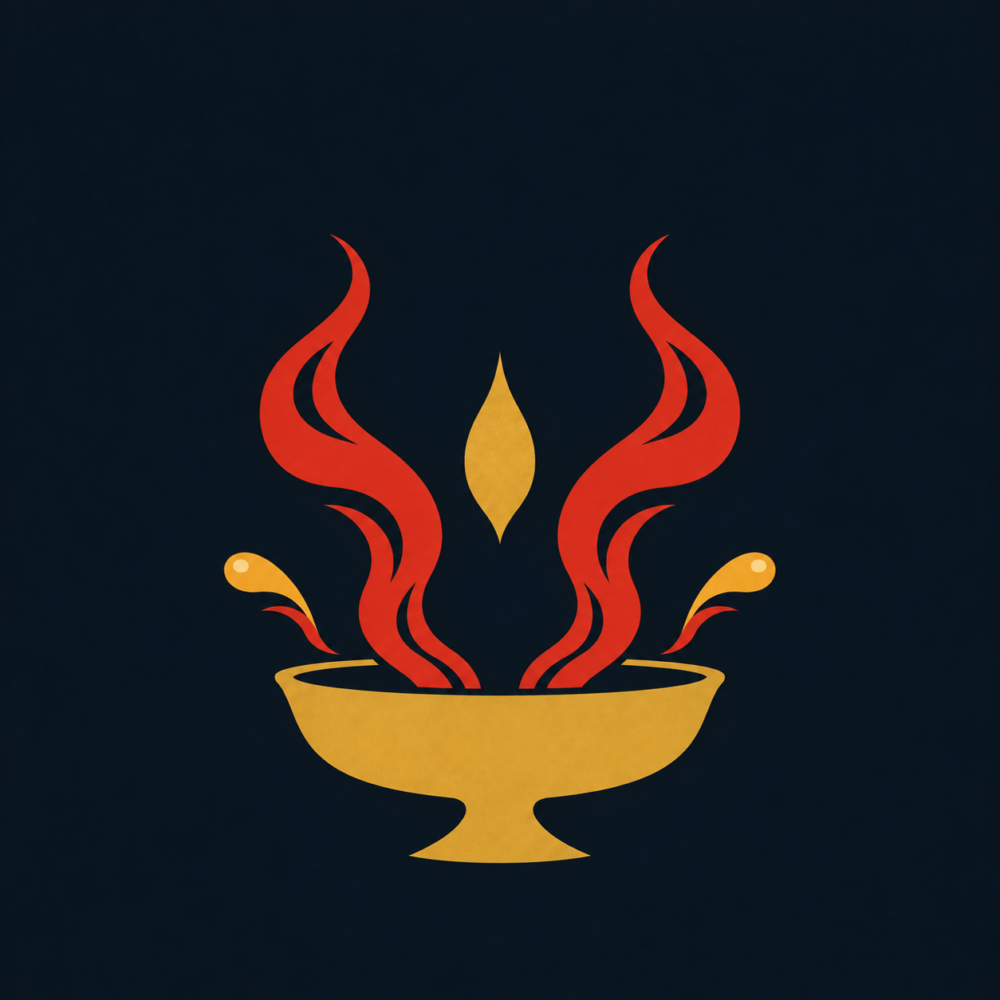

模板库预览件 · 不入卡 ｜ v3 揭幕卡版：形稿取自原纹章位图自动矢量化，分镜按主人 10-13 设计；结算轮气质（灵雾・遮罩揭幕・金粉）；标题已内嵌开源毛笔字体七字子集（马善政楷 3.9KB / 志莽行 2.8KB，OFL 可商用） ｜ 纯 SVG＋CSS，自包含无依赖
灼酒流炎穴
觉醒
点击画面任意处也可重播
你：举杯饮尽，酒液入喉化作一线流炎……✦ 判定通过

点按钮模拟晋升判定完成：揭幕卡自暗幕中弹出、播一次后自动消散，两翼瓷砖随即点亮（灰罩 → 金框）。再次点击可重演；点揭幕卡本身可提前跳过。
动画里的每一块形（杯体、双舌流炎连同内勾缝、中央焰滴、双酒滴与红焰尾）都是从右边这张原图按颜色自动描廓提取的矢量路径，静止时与原图逐像素对齐；行楷标题依赖本机字体（华文行楷，缺则回退楷体）。
render() 时对名器算 getRelicStage(cfg.id, stat_data.known)——阶段值高于「已播记录」（0→1 成形，或 N→N+1 晋阶）即触发，与两翼瓷砖渲染互不相干（不动瓷砖代码）。dataset.xsd2Settlements 的挂法，在 mountHUD 里建一个 fixed 全屏覆盖层容器；触发时注入揭幕卡（本页整套 SVG＋CSS＋七字字体子集，单件约 10KB），播完自动 remove()，点击可跳过。sessionStorage（只增不减）——刷新、回看旧楼、checkpoint 恢复都不会重播；options.readOnly（历史楼只读）直接不播。